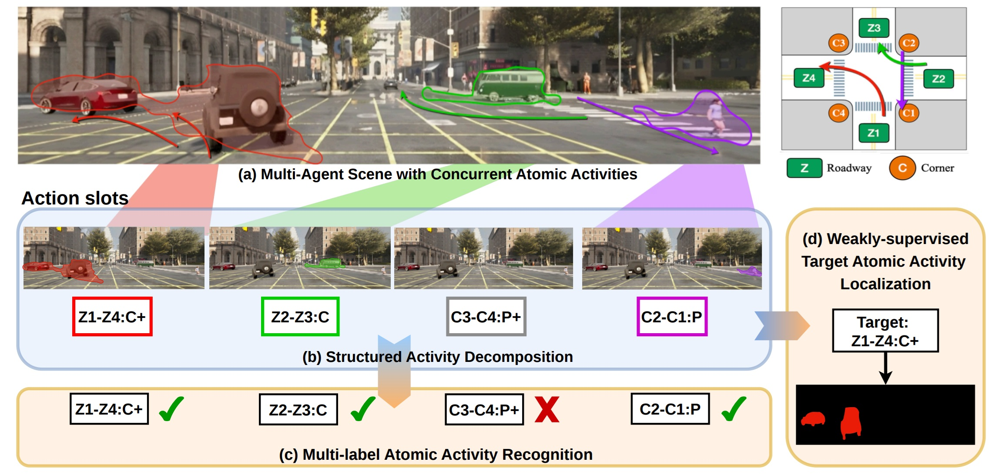
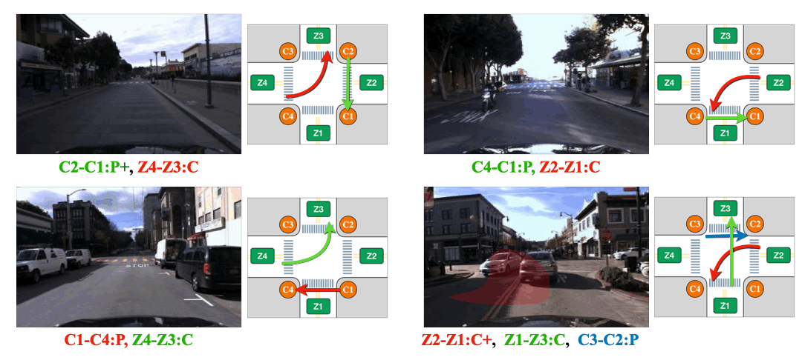
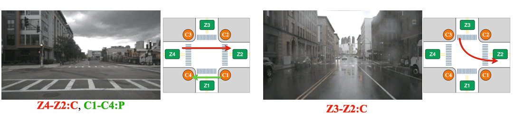

Atomic activity understanding aims to recognize and localize structured traffic behaviors that jointly encode motion patterns and their grounding in road topology. Unlike conventional action recognition, atomic activities are inherently multi-agent, multi-label, and topology-aware, where multiple activities may co-occur while many agents remain inactive. This setting calls for structured action-centric representation learning, requiring decomposing a scene into semantically meaningful activity components. We introduce Action-Slot, a structured action-centric representation learning framework. While slot attention has been widely used for object-centric decomposition, its permutation-invariant design and object-level inductive bias are misaligned with atomic activity semantics. We reformulate slot learning as structured activity decomposition through three key designs: (1) category-aligned action slots that impose semantic anchoring over predefined atomic activity categories, (2) parallel spatio-temporal slot updating for holistic video-level reasoning, and (3) background and negative-slot regularization that enforces competition between foreground activities and irrelevant regions. Together, these designs establish an activity-centric inductive bias that disentangles concurrent and asynchronous atomic activities directly from raw video. Beyond recognition, we show that the learned representations encode transferable spatial grounding signals. We further propose an attention-difference–based pseudo mask selection framework that suppresses false positives by measuring attention changes before and after candidate region removal, enabling effective weakly supervised localization. To support systematic evaluation, we introduce TACO, a balanced dataset with full atomic activity coverage and pixel-level annotations. Extensive experiments across synthetic and real-world datasets demonstrate superior recognition performance, cross-domain generalization, structured decomposition analysis, and weakly supervised localization. Overall, this work establishes a principled action-centric representation learning framework that unifies recognition and spatial reasoning for multi-agent atomic activity understanding.

Overview of Action-Slot for Multi-Agent Atomic Activity Understanding. (a) A multi-agent traffic scene containing multiple concurrent atomic activities, illustrated by colored trajectories. For example, the red trajectory corresponds to the atomic activity Z1-Z4: C+, representing a group of vehicles turning left along a topologically defined path. (b) Action-Slot decomposes the scene into semantically aligned action slots, each capturing one atomic activity without relying on object proposals. (c) The resulting slot representations enable multi-label atomic activity recognition by predicting whether each atomic activity category is present in the scene. (d) The learned action slots provide spatial grounding signals that enable high-quality pseudo-mask generation for weakly supervised target atomic activity localization.
We compare object instance mask guidance with Action-slot that is guided with \(L_{bg}\) and \(L_{neg}\) mentioned in Sec. 3.3. . We hpothesize that the object guidance can mislead the model because not all road users are involved in an activity. To verify it, we first create scenarios where presents many static pedestrians. Note that there is no atomic activity presented in the scenarios. Then we visualize the attention from the any slot that predicts false positive. The object-guided model is confused by the static road users and makes false positive predictions. While our Action-slot shows strong robustness in the scenarios

We visualize attention from action slots. Distinct colored masks represent the classes of atomic activitiy that the corresponding action slots pay attention to. Action-slot can localize atomic activities by training with weak action labels and without using any perception module (e.g., object detector).



The Overview of the Proposed Pseudo Mask Selection Framework. First, we generate the initial pseudo mask by matching the attention map with nearby object masks. To alleviate the false positive resulting from the diffuse or ambiguous attention map, we inpaint the initial pseudo mask region and identify the important regions from the attention difference before and after inpainting, then re-associate with object masks to generate slelected pseudo masks.
@unpublished{chang2026actionslot,
title = {Action-Slot: Structured Action-Centric Representation Learning for Multi-Agent Atomic Activity Understanding},
author = {Chang, Yu-Ho and Kung, Chi-Hsi and Tsai, Yi-Hsuan and Chen, Yi-Ting},
note = {Manuscript in preparation},
year = {2026}
}